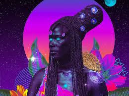
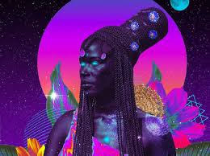

In his 1993 essay “Black to the Future,” cultural critic Mark Dery coined the term Afrofuturism to describe the cross-cultural philosophy of artists, musicians, and writers who drew on the techno-utopian thinking of the space age to reimagine Black life in the United States. Equally indebted to mythologies of the African Diaspora, Afrofuturism is not an artistic style but an approach to the intersections of race and technology that aims to visualize the future. In the late 1960s and early 1970s, musicians (Sun Ra, Grace Jones, and Parliament Funkadelic), authors (Octavia Butler), and visual artists (Renee Cox) drew upon the futuristic energy of science fiction, seeing outer space as an escape from the oppressive social and political climate of the Vietnam war and post–Civil Rights era. Afrofuturism’s engagement with the African Diaspora is wide-ranging: photojournalist Cristina de Middel took the failed 1964 Zambian space program as the subject of her 2012 series Afronaut. Other artists have employed cyborgs, robots, and aliens as alter-egos to access alternative identities, such as Kenyan-American artist Wangechi Mutu; others have addressed the habitable space of the cosmos, as in Kerry James Marshall’s Keeping the Culture or Sanford Biggers’s psychedelic quilts referencing cosmological maps.